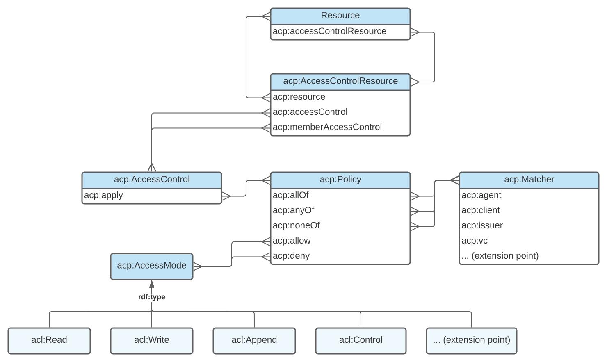

1. Introduction
This section introduces ACP with an overview of key terminology, an explanation of the conventions used in this document, example graphs to illustrate basic concepts of resource access description and validation, a diagram representing the main elements of the ACP data model, and an RDF representation of the ACP ontology.
1.1. RDF terminology
This document uses the terms resource, property, RDF vocabulary, namespace, namespace IRI, namespace prefix, graph, IRI, literal, blank node, node, term, IRI equality and literal term equality as defined in RDF 1.1 Concepts and Abstract Syntax RDF11 CONCEPTS.
1.2. RDF vocabularies and namespace IRIs
This document uses the following RDF vocabularies and corresponding namespace prefix bindings:
| Prefix | Namespace |
|---|---|
acp:
|
http://www.w3.org/ns/solid/acp#
|
acl: |
http://www.w3.org/ns/auth/acl#
|
ex: |
https://example.org/
|
ldp: |
http://www.w3.org/ns/ldp#
|
rdf: |
http://www.w3.org/1999/02/22-rdf-syntax-ns#
|
rdfs: |
http://www.w3.org/2000/01/rdf-schema#
|
owl: |
http://www.w3.org/2002/07/owl#
|
1.3. ACP terminology
This section is non-normative.
- Context graph
- Context graphs describe the attributes of resource access instances. An access request's attributes can be matched to sets of conditions defined in the form of an authorization graph in order to determine Access Modes granted over resources.
- Authorization graphs authoritatively define the conditions for granting Access Modes over resources through Access Control Resources, Access Controls, Policies and Matchers. The result of applying an authorization graph to a described instance of resource access is an access grant graph.
- Access grant graph
- Access grant graphs describe sets of Access Modes granted over resources in the context of resource access requests. Access grants are the result of access control resolution.
- Access control resolution
- Access control resolution describes the algorithm used to apply an authorization graph to a context graph in order to obtain an access grant graph.
1.4. Example graphs
This section is non-normative.
Throughout this document, color-coded boxes contain the RDF representation of example context graphs, authorization graphs, and access grant graphs serialized in turtle RDF11-TURTLE. Those graphs use a mix of IRIs and blank nodes where applicable to better show the range of possible representations.
The following example context graph describes an instance of resource access and could be translated as: "Bob is trying to read resource X using client application Y with their identity asserted by identity provider Z.".
# This box contains a context graph # It describes an instance of resource access [] acp:target ex:resourceX ; acp:agent ex:Bob ; acp:mode acl:Read ; acp:client ex:clientApplicationY ; acp:issuer ex:identityProviderZ .
The following example
authorization graph
defines the conditions of access to resource X and could be
translated as:
"Access to resource X is mandated by one Access Control that
applies one Policy which allows access mode
acl:Read when Alice or Bob are the agent trying to
access resource X.".
# This box contains an authorization graph
# It describes the conditions required for accessing a resource
[]
a acp:AccessControlResource ;
acp:resource ex:resourceX ;
acp:accessControl [
a acp:AccessControl ;
acp:apply [
a acp:Policy ;
acp:allow acl:Read ;
acp:anyOf [
a acp:Matcher ;
acp:agent ex:Alice, ex:Bob ;
]
]
] .
The following example
access grant graph
is the result of
applying
the previous example authorization graph which defines access to
resource X to the previous example context graph which describes a
read access request to target resource X. Bob is matched as the
context agent and since the policy allowing
acl:Read defines no further restrictions, it is
satisfied. The following access grant graph could be read as:
"The access mode acl:Read is granted to Bob who
requested read access to resource X using client application Y
with their identity asserted by identity provider Z.".
# This box contains an access grant graph
# It describes in context the granted access over a resource
[]
acp:grant acl:Read ;
acp:context [
acp:agent ex:Bob ;
acp:target ex:resourceX ;
acp:mode acl:Read ;
acp:client ex:ClientApplicationY ;
acp:issuer ex:IdentityProviderZ ;
] .
1.5. Data model
This section is non-normative.
The following diagram illustrates the main elements of ACP.
1.6. Ontology
All terms defined by the Access Control Policy Language are present in a non-normative RDF representation of the ACP ontology serialized in turtle.
2. Conformance
All assertions, diagrams, examples, pseudocode and notes are non-normative, as are all sections explicitly marked non-normative. Everything else is normative.
The key words MUST, MUST NOT, REQUIRED, SHALL, SHALL NOT, SHOULD, SHOULD NOT, RECOMMENDED, MAY, and OPTIONAL, are to be interpreted as defined in RFC 2119.
Only UPPERCASE usage of the key words defined in RFC 2119 have special meanings, as per RFC 8174.
3. Context Graph
This section introduces the ACP terms used to describe instances of resource access.
3.1. Context
-
acp:Context - Instances of the Context class describe instances of resource access.
-
acp:attribute - Sub-properties of ACP attribute are used to describe instances of resource access.
-
acp:target - The target attribute describes requested resources.
-
acp:mode - The mode attribute describes requested modes of access.
-
acp:agent - The agent attribute describes agents initiating requests.
-
acp:creator - The creator attribute describes creators of requested resources.
-
acp:owner - The owner attribute describes owners of requested resources.
-
acp:client - The client attribute describes client applications used to request resources.
-
acp:issuer - The issuer attribute describes identity providers used to assert the identity of agents requesting resources.
-
acp:vc - The vc attribute describes types of Verifiable Credentials (VC) presented as part of resource access requests.
3.1.1. Example Context
The following example context graph denotes instances of resource access initiated by Bob.
[] a acp:Context ; acp:agent ex:Bob .
The following example context graph means that Bob requests access to resource X using client application Y and with their identity asserted by identity provider Z; furthermore, resource X was created by Alice and is owned by Bob.
ex:contextA acp:target ex:resourceX ; acp:agent ex:Bob ; acp:client ex:ClientApplicationY ; acp:issuer ex:IdentityProviderZ ; acp:owner ex:Bob ; acp:creator ex:Alice .
The following example context graph denotes instances of resource access where client application X or client application Y are used and identity is asserted by identity provider Z.
[ acp:client ex:ClientApplicationX, ex:ClientApplicationY ; acp:issuer ex:IdentityProviderZ ; ] .
3.2. Context extensibility
Sub-properties of acp:attribute can be created to fit
the specific access control requirements of applications.
3.2.1. Example Context extension
Let's imagine a property ex:tag defined as a an
rdfs:subPropertyOf acp:attribute that would describe
tags applied to requested resources. If such a property was
defined, then the following example context graph would denote
instances of resource access over resource X initiated by Bob
where resource X was tagged ex:Music and
ex:FavouriteRecord.
ex:contextA acp:target ex:resourceX ; acp:agent ex:Bob ; ex:tag ex:Music, ex:FavouriteRecord .
4. Authorization Graph
This section introduces the ACP terms used to control access to resources.
4.1. Access Control Resource
-
acp:AccessControlResource - Instances of the Access Control Resource (ACR) class connect resources to their Access Controls.
-
acp:resource -
The resource property connects
ACRs
to
resources
they control. It is the inverse of
acp:accessControlResource. -
acp:accessControl - The access control property connects ACRs to Access Controls.
-
acp:memberAccessControl - The member access control property transitively connects ACRs of member resources to Access Controls.
4.1.1. Example Access Control Resource
The following example authorization graph means that access to resource X is controlled by both Access Controls B and C; furthermore, access to members of resource X is controlled by Access Control D; furthermore, member control is transitive, therefore, further members of member resources will also be controlled by Access Control D.
ex:accessControlResourceA acp:resource ex:resourceX ; acp:accessControl ex:accessControlB, ex:accessControlC ; acp:memberAccessControl ex:accessControlD .
4.2. Access Control
-
acp:AccessControl - Instances of the Access Control class connect Access Control Resources to their Policies.
-
acp:apply - The apply property connects Access Controls to the Policies they apply to resources.
4.2.1. Example Access Control
The following example authorization graph means that access to resource X is controlled by Policy C.
ex:accessControlResourceA
acp:resource ex:resourceX ;
acp:accessControl [
acp:apply ex:policyC ;
] .
The following two example authorization graphs both mean that access to resource X is controlled by Policy D and Policy E.
ex:accessControlResourceA acp:resource ex:resourceX ; acp:accessControl ex:accessControlB, ex:accessControlC . ex:accessControlB acp:apply ex:policyD . ex:accessControlC acp:apply ex:policyE .
[] acp:resource ex:resourceX ; acp:accessControl ex:accessControlF . ex:accessControlF acp:apply ex:policyD, ex:policyE .
4.3. Policy
-
acp:Policy - Instances of the Policy class connect Access Controls to allowed and denied Access Modes as well as sets of Matchers describing instances of resource access.
-
acp:allow - The allow property connects Policies to the Access Modes they allow if satisfied.
-
acp:deny - The deny property connects Policies to the Access Modes they deny if satisfied.
-
acp:allOf - The all of property connects Policies to a set of Matchers, all of which MUST be satisfied for the Policy to be satisfied.
-
acp:anyOf - The any of property connects Policies to a set of Matchers, at least one of which MUST be satisfied for the Policy to be satisfied.
-
acp:noneOf - The none of property connects Policies to a set of Matchers, all of which MUST NOT be satisfied for the Policy to be satisfied.
4.3.1. Example Policy
The following example authorization graph means that Policy A will
allow acl:Read for instances of resource access
satisfying both Matcher B and Matcher C.
ex:policyA acp:allow acl:Read ; acp:allOf ex:matcherB, ex:matcherC .
The following example authorization graph means that a Policy will
deny acl:Write for instances of resource access
satisfying either Matcher B or Matcher C.
[] acp:deny acl:Write ; acp:anyOf ex:matcherB, ex:matcherC .
The following example authorization graph means that reading and writing resource X will be allowed for instances of resource access satisfying Matcher A and not Matcher B.
[
acp:resource ex:resourceX ;
acp:accessControl [
acp:apply [
acp:allow acl:Read, acl:Write ;
acp:anyOf ex:matcherA ;
acp:noneOf ex:matcherB ;
] ;
] ;
] .
4.4. Matcher
-
acp:Matcher - Instances of the Matcher class are descriptions of matching Contexts.
-
acp:agent - In a Matcher, agent attributes define a set of agents, at least one of which MUST match the Context for the Matcher to be satisfied.
-
acp:PublicAgent - In a Matcher, agent attributes using the Public Agent named individual MUST match all Contexts.
-
acp:AuthenticatedAgent - In a Matcher, agent attributes using the Authenticated Agent named individual MUST match Contexts that contain an agent.
-
acp:CreatorAgent - In a Matcher, agent attributes using the Creator Agent named individual MUST match Contexts where a defined creator matches the defined agent.
-
acp:OwnerAgent - In a Matcher, agent attributes using the Owner Agent named individual MUST match Contexts where a defined owner matches the defined agent.
-
acp:client - In a Matcher, client attributes define a set of clients, at least one of which MUST match the Context for the Matcher to be satisfied.
-
acp:PublicClient - In a Matcher, client attributes using the Public Client named individual MUST match all Contexts.
-
acp:issuer - In a Matcher, issuer attributes define a set of issuers, at least one of which MUST match the Context for the Matcher to be satisfied.
-
acp:PublicIssuer - In a Matcher, issuer attributes using the Public Issuer named individual MUST match all Contexts.
-
acp:vc - In a Matcher, vc attributes define a set of types of Verifiable Credentials (VC), at least one of which MUST match the Context for the Matcher to be satisfied. A VC type present in the Context MUST be a valid VC presented as part of the resource access request.
-
acp:AlwaysSatisfiedRestriction - Defined instances of the Always Satisfied Restriction class are used in Matcher restrictions to indicate that the restriction is always satisfied. The default behaviour of a Matcher is to not be satisfied, so this is the only way to make a Matcher always satisfied.
4.4.1. Example Matcher
The following example authorization graph means that Matcher A will be satisfied when either Alice or the owner of the access controlled resource are requesting access.
ex:matcherA a acp:Matcher ; acp:agent ex:Alice, acp:OwnerAgent .
The following example authorization graph means that the defined Matcher will be satisfied when matched against a context graph where the client used to access the access controlled resource is client B.
[ a acp:Matcher ; acp:client ex:clientB ; ] .
The following example authorization graph means that Matcher A will be satisfied when matched against a context graph where the identity provider used to assert the identity of the agent requesting access to the access controlled resource is issuer B.
ex:matcherA a acp:Matcher ; acp:issuer ex:issuerB .
The following example authorization graph means that the defined Matcher will be satisfied when matched against a context graph showing that a valid VC of type credential B has been presented by the agent requesting access to the access controlled resource.
[] a acp:Matcher ; acp:vc ex:credentialB .
The following example authorization graph means that matcher A will be satisfied only if either Alice or Bob are the agent requesting resource access and their identity was asserted by Identity Provider B.
ex:matcherA a acp:Matcher ; acp:agent ex:Bob, ex:Alice ; acp:issuer ex:IdentityProviderB .
The following example authorization graph means that the defined matcher will be satisfied only if Alice, whose identity is asserted by Identity Provider B, is the agent requesting resource access and is doing so presenting a VC that is a valid instance of credential A.
[ a acp:Matcher ; acp:agent ex:Alice ; acp:issuer ex:IdentityProviderB ; acp:vc ex:credentialA ; ] .
The following example authorization graph means that Policy A denies Read and Write access to all clients but client C and policy B allows read to all clients. If Policy A and B control access to a resource, then anyone using client C will have Read access to that resource.
ex:policyA
acp:deny acl:Read, acl:Write ;
acp:anyOf [
acp:client acp:PublicClient ;
] ,
acp:noneOf [
acp:client ex:clientC
] .
ex:policyB
acp:allow acl:Read ;
acp:anyOf [
acp:client:PublicClient ;
] .
4.5. Matcher extensibility
ACP implementations supporting sub-properties of
acp:attribute other than the ones defined by ACP SHOULD
also define and implement corresponding matching algorithms.
4.5.1. Example Matcher extension
Given the property ex:tag previously defined in the
example context extension
as a an rdfs:subPropertyOf acp:attribute that
describes tags applied to requested resources; the following
example context graph would mean that Policy 1 allows Read and is
satisfied by instances of resource access initiated over a
resource that was tagged ex:FavouriteRecord or
ex:Wishlist.
ex:policy1
acp:allow acl:Read ;
acp:anyOf [
ex:tag ex:FavouriteRecord, ex:Wishlist ;
] .
5. Access Grant Graph
This section introduces the ACP terms used to grant access to resources.
5.1. Access Grant
-
acp:AccessGrant - Instances of the Access Grant class define sets of Access Modes granted in particular Contexts.
-
acp:context - The context property connects Access Grants to the Contexts in which they're given.
-
acp:grant - The grant property connects Access Grants to the Access Modes they grant.
5.1.1. Example Access Grant
The following example access grant graph means that Access Modes
acl:Read and acl:Write have been granted
to Alice for accessing resource X.
[]
acp:grant acl:Read, acl:Write ;
acp:context [
acp:agent ex:Alice ;
acp:target ex:resourceX ;
] .
5.2. Access Mode extensibility
-
acp:AccessMode - The ACP specification does not define specific Access Modes. Instead, any Access Mode granted is an instance of the Access Mode class. Access Modes and their granularity can be tailored to the needs of an application and Access Modes defined in other vocabularies can also be used (for example, instances of ACL Access).
5.2.1. Example Access Mode
The following example access grant graph means that
acl:Read and ex:Delete are Access Modes;
furthermore, it means that acl:Read and
ex:Delete have been granted to Bob over resource X.
[]
acp:grant acl:Read, ex:Delete ;
acp:context [
acp:target ex:resourceX ;
acp:agent ex:Bob ;
] .
6. Access Control resolution
This section introduces the ACP access control resolution algorithm for resolving permissions to access controlled resources.
6.1. Resolved Access Control
An ACP engine MUST grant exactly those Access Modes allowed by Effective Policies.
6.1.1. Resolved Access Control pseudocode
function resolveAccessControl(acr, ancestorAcrs, context) {
const effectivePolicies = gatherEffectivePolicies(acr, ancestorAcrs)
const allowedAccessModes = grantAccessModes(effectivePolicies, context)
const grantGraph = {
context,
grant: allowedAccessModes
}
return grantGraph
}
6.2. Effective Policies
Effective Policies are the Policies controlling access to a resource.
A Policy MUST control access to a resource if:
- it is applied by an Access Control of an ACR of the resource; or,
- it is applied by a member Access Control of an ACR of an ancestor of the resource.
6.2.1. Effective Policies example
The following example authorization graph means that access to resource X is controlled by both Access Controls B and C, access to resource X is therefore controlled by Policy E and Policy F. The member Access Controls are not taken into account at this level. Member Access Control D will be included in the effective authorization graph of resource X's members' ACRs both as an Access Control and a member Access Control. Therefore, Policy G will be part of the set of effective Policies controlling access to resource X's members and transitively to further members of member resources.
ex:accessControlResourceA
acp:resource ex:X ;
acp:accessControl ex:accessControlB, ex:accessControlC ;
acp:memberAccessControl ex:accessControlD .
ex:accessControlB
acp:apply ex:PolicyE .
ex:accessControlC
acp:apply ex:PolicyF .
ex:accessControlD
acp:apply ex:PolicyG .
6.2.2. Effective Policies pseudocode
function gatherEffectivePolicies(acr, ancestorAcrs) {
const effectivePolicies = new Set
// Direct access controls of own ACR.
for (const accessControl of acr.accessControls)
for (const policy of accessControl.appliedPolicies)
effectivePolicies.add(policy)
// Member access controls of ancestor ACRs.
for (const acr of ancestorAcrs)
for (const accessControl of acr.memberAccessControls)
for (const policy of accessControl.appliedPolicies)
effectivePolicies.add(policy)
return effectivePolicies
}
6.3. Granted Access Modes
An Access Mode MUST be granted if and only if in the set of Effective Policies:
- a satisfied policy allows the Access Mode; and,
- no satisfied policy denies it.
6.3.1. Granted Access Modes example
The following example authorization graph means that access to resource X is controlled by Policy B and Policy C. Depending on the satisfaction of Policies B and C, different access modes will be granted.
-
If only Policy B is satisfied, then Access Modes
acl:Readandacl:Writewill be granted. -
If both Policy B and Policy C are satisfied, then only Access
Mode
acl:Readwill be granted. - If only Policy C is satisfied, then no Access Mode will be granted.
[
acp:resource ex:X ;
acp:accessControl [
acp:apply ex:policyB, ex:policyC ;
]
] .
ex:policyB
acp:allow acl:Read, acl:Write .
ex:policyC
acp:deny acl:Write .
6.3.2. Granted Access Modes pseudocode
function grantAccessModes(policies, context) {
const allowedAccessModes = new Set, deniedAccessModes = new Set
// Gather allowed and denied access modes from satisfied policies
for (const policy of policies)
if (isSatisfiedPolicy(policy, context)) {
for (const mode of policy.allowedAccessModes)
allowedAccessModes.add(mode)
for (const mode of policy.deniedAccessModes)
deniedAccessModes.add(mode)
}
// Deny overrules allow.
for (const mode of deniedAccessModes)
allowedAccessModes.delete(mode)
return allowedAccessModes
}
6.4. Satisfied Policy
A Policy MUST be satisfied if and only if:
-
it references at least one Matcher via an
acp:allOforacp:anyOfproperty; and, -
all of its
acp:allOfMatchers are satisfied; and, -
at least one of its
acp:anyOfMatchers is satisfied; and, -
none of its
acp:noneOfMatchers are satisfied.
6.4.1. Satisfied Policy example
The following example authorization graph means that access to resource X is controlled by Policy A. Depending on the satisfaction of Matchers B, C, D, E and F, Policy A will be satisfied or not.
- If either Matcher B or Matcher C are not satisfied, then Policy A will not be satisfied.
- If neither Matcher D nor Matcher E are satisfied, then Policy A will not be satisfied.
- If either Matcher F or Matcher G is satisfied, then Policy A will not be satisfied.
- If both Matcher B and Matcher C are satisfied, and, either Matcher D or Matcher E are satisfied, and, Matcher F and Matcher G are not satisfied, then Policy A will be satisfied.
[
acp:resource ex:X ;
acp:accessControl [
acp:apply ex:policyA ;
]
] .
ex:policyA
acp:allOf ex:matcherB, ex:matcherC ;
acp:anyOf ex:matcherD, matcherE ;
acp:noneOf ex:matcherF, ex:matcherG .
6.4.2. Satisfied Policy pseudocode
function isSatisfiedPolicy(policy, context) {
// If any 'none of' matcher is satisfied then the policy is not satisfied.
for (const matcher of policy.noneOfMatchers)
if (isSatisfiedMatcher(matcher, context))
return false
// If any 'all of' matcher is not satisfied then the policy is not satisfied.
for (const matcher of policy.allOfMatchers)
if (!isSatisfiedMatcher(matcher, context))
return false
// If any 'any of' matcher is satisfied then the policy is satisfied.
for (const matcher of policy.anyOfMatchers)
if (isSatisfiedMatcher(matcher, context))
return true
// At this point there are
// - no satisfied 'none of' matchers,
// - no unsatisfied 'all of' matchers and
// - no satisfied 'any of' matchers.
// Hence, the policy is satisfied if it has
// - an 'all of' condition and
// - no 'any of' condition.
return policy.allOfMatchers.size !== 0 && policy.anyOfMatchers === 0
}
6.5. Satisfied Matcher
A Matcher MUST be satisfied if and only if:
- it defines at least one attribute; and,
- at least one value of each defined attribute matches the Context.
ACP engines MUST match the context attributes defined by this specification according to IRI equality and literal term equality.
6.5.1. Satisfied Matcher example
The following example authorization graph means that access to resource X is controlled by a Policy that will allow read if it is satisfied and be satisfied if either matcher A or matcher B or both are satisfied.
Matcher A will be satisfied if:
- either Alice or Bob are the requesting agent or if the requesting agent is an owner or creator; and,
- client 1 is used by the requesting agent; and,
- issuer 2 is used by the requesting agent to assert their identity.
Matcher B will be satisfied if:
- a valid VC of type "Family Member" is presented.
[
acp:resource ex:X ;
acp:accessControl [
acp:apply [
acp:allow acl:Read ;
acp:anyOf ex:matcherA, ex:matcherB ;
]
]
] .
ex:matcherA
acp:agent ex:Alice, ex:Bob, acp:CreatorAgent, acp:OwnerAgent ;
acp:client ex:client1 ;
acp:issuer ex:issuer2 .
ex:matcherB
acp:vc ex:FamilyMember .
6.5.2. Satisfied Matcher pseudocode
function isSatisfiedMatcher(matcher, context) {
// An empty matcher is never satisfied.
if (matcher.agents.size === 0 && matcher.clients.size === 0 && matcher.issuers.size === 0 && matcher.vcs.size === 0)
return false
// For each attribute, if any values are defined, then at least one of them must match the context.
if (matcher.agents.size !== 0) {
let isMatch = false
for (const agent of matcher.agents)
if (agentMatches(agent, context)) {
isMatch = true
break
}
if (!isMatch)
return false
}
if (matcher.clients.size !== 0) {
let isMatch = false
for (const client of matcher.clients)
if (clientMatches(client, context)) {
isMatch = true
break
}
if (!isMatch)
return false
}
if (matcher.issuers.size !== 0) {
let isMatch = false
for (const issuer of matcher.issuers)
if (issuerMatches(issuer, context)) {
isMatch = true
break
}
if (!isMatch)
return false
}
if (matcher.vcs.size !== 0) {
let isMatch = false
for (const vc of matcher.vcs)
if (vcMatches(vc, context)) {
isMatch = true
break
}
if (!isMatch)
return false
}
// At this point, the matcher is satisfied because
// - there was at least one defined attribute and
// - at least one value of each defined attribute matched the context.
return true
}
const publicAgent = "https://www.w3.org/ns/solid/acp#PublicAgent"
const authenticatedAgent = "https://www.w3.org/ns/solid/acp#AuthenticatedAgent"
const creatorAgent = "https://www.w3.org/ns/solid/acp#CreatorAgent"
const ownerAgent = "https://www.w3.org/ns/solid/acp#OwnerAgent"
function agentMatches(agent, context) {
if (agent === publicAgent)
return true
if (agent === authenticatedAgent && context.agent !== null)
return true
if (agent === creatorAgent && context.creators.includes(context.agent))
return true
if (agent === ownerAgent && context.owners.includes(context.agent))
return true
if (agent === context.agent)
return true
}
const publicClient = "https://www.w3.org/ns/solid/acp#PublicClient"
function clientMatches(client, context) {
if (client === publicClient)
return true
if (client === context.client)
return true
}
const publicIssuer = "https://www.w3.org/ns/solid/acp#PublicIssuer"
function issuerMatches(issuer, context) {
if (issuer === publicIssuer)
return true
if (issuer === context.issuer)
return true
}
function vcMatches(vc, context) {
if (context.vcs.includes(vc))
return true
}
7. Server implementation
This section introduces conforming resource server and ACP server requirements.
7.1. Conforming resource server
Conforming resource servers MUST provide ACP servers with resource access Contexts and MUST authorize resource access according to grant graphs produced by a conforming ACP server.
When responding to requests targetting access controlled resources,
conforming resource servers MUST include a Link header
with the rel value of acl and controlled
resources' ACRs as the link target
RFC 8288.
Conforming resource servers MUST provide ACP servers with sufficient resource membership information to resolve ancestor ACRs.
7.2. Conforming ACP server
When responding to requests targetting an ACR, conforming ACP
servers MUST include a Link header with the
rel value of type and the
http://www.w3.org/ns/solid/acp#AccessControlResource
IRI as the link target.
When responding to OPTIONS requests targetting an ACR, conforming
ACP servers MUST include a Link header for each
supported Access Mode with the rel value of
http://www.w3.org/ns/solid/acp#grant and the full IRI
of the supported Access Mode as the link target.
When responding to OPTIONS requests targetting an ACR, conforming
ACP servers MUST include a Link header for each
supported attribute with the rel value of
http://www.w3.org/ns/solid/acp#attribute and the full
IRI of the supported attribute as the link target.
Conforming ACP engines MAY be conforming resource servers.
The lifecycle of Access Control Resources SHOULD take into account the lifecycle of resources they control access to.